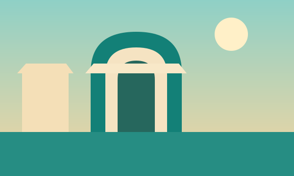

منبع قابل بررسی
برای هر خبر تا حد امکان لینک مستقیم ناشر درج میشود. خبر بازنشرشده با همین برچسب مشخص میشود و بهجای بیانیهٔ رسمی معرفی نمیشود.
اعتماد با منبع روشن، تاریخ دقیق، اصلاح بهموقع و تفکیک واقعیت از تفسیر ساخته میشود.

برای هر خبر تا حد امکان لینک مستقیم ناشر درج میشود. خبر بازنشرشده با همین برچسب مشخص میشود و بهجای بیانیهٔ رسمی معرفی نمیشود.
تاریخ انتشار خبر از زمان وقوع رویداد جداست. مطالب قدیمی برچسب آرشیو میگیرند تا با خبر امروز اشتباه نشوند.
خبر نقلشده، خلاصهٔ تحریریه، راهنمای عمومی و نظر تحلیلی ماهیت یکسانی ندارند؛ تیتر و متن باید این تفاوت را روشن کنند.
عدد، رتبه و ادعای مربوط به عملکرد کسبوکار بدون منبع و تاریخ منتشر نمیشود؛ نبود داده با عدد حدسی پر نخواهد شد.
تصویرسازی نمایشی بهعنوان عکس مستند معرفی نمیشود. تصاویر ثالث باید با رعایت مجوز و شرایط استفاده منتشر شوند.
در صورت شناسایی خطای واقعی، محتوا اصلاح میشود و اگر بر برداشت مخاطب اثر داشته باشد، توضیح اصلاح نیز افزوده خواهد شد.
نامبردن از جاباما، میهمانشو، شب یا جاجیگا نشانهٔ تأیید یا همکاری رسمی نیست؛ هر ادعای مرتبط نیازمند شواهد است.
این نسبت هدف برنامهریزی تحریریه است، نه آمار صنعت. اولویت با ایران و خبرهای جهانی برای مقایسهٔ محتاطانه است.